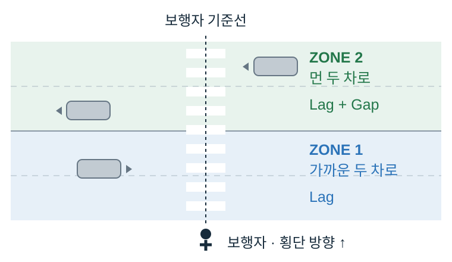

횡단 전: 대기공간에서 출발
횡단 중: 차량 간 간격을 이용해 계속 횡단
BACHELOR THESIS, PEDESTRIAN SAFETY
비신호 횡단보도의 개인과 군집 이동에 따른
보행자와 차량의 임계간격 연구
보라매병원역 인근 왕복 4차로 비신호 횡단보도를 17시간 촬영해 916개 사례를 구축하고, 개인과 군집 보행자가 차량과의 거리와 차간시간을 어느 수준에서 수락하는지 비교했습니다.
- 기간
- 2023.01–2023.05
- 팀
- 2인 · DoSeeThink
- 역할
- 데이터 수집 설계, 영상 분석, 통계 분석, 판별 기준 정립
- 성과
- 졸업작품전 1위, 한국교통연구원장상, 공과대학장상제26회 도시공학과 졸업작품전 1위, 한국교통연구원장상
2023 CAU 공학학술제 공과대학장상

연구 정리 자료
현장 관측부터 임계간격 산출까지 한 장에 정리
대상지 선정, 데이터 수집 및 판별기준, Zone 1과 Zone 2 구분, 개인과 군집 보행자의 Critical lag와 Critical gap 분석 결과를 한 장에 정리했습니다.
DoSeeThink 포스터 원문 열기 ↗학사논문 원문 열기 ↗01 / METHOD
보행자가 실제로 볼 수 있는 정보부터 나눴다
횡단 전과 횡단 중에는 보행자가 볼 수 있는 차량 정보가 달랐습니다. 이를 같은 기준으로 분석하지 않고, 보행자와 가까운 두 차로를 Zone 1, 먼 두 차로를 Zone 2로 나눠 관측 가능한 정보를 구분했습니다.

횡단 전: 대기공간에서 계속 대기
횡단 중: 중앙선 또는 대기 위치에서 멈춤
02 / DATA
현장 관측을 분석 가능한 자료로 바꿨다
17시간 8분 5초
4월 3–10일 현장 영상 분석
916개
보행자와 차량 상충 사례
675 Accept
241 Reject
전체의 약 74% / 26%
보라매병원역 인근 비신호 횡단보도를 인근 건물 약 45 m 높이에서 촬영하고, 현장 실측 지형지물을 이용해 영상에 1 m 간격 기준을 구성했습니다.
03 / RESULT
개인과 군집의 수락 기준이 달랐다

| 대상 | Critical lag (거리) | Critical gap (시간) |
|---|---|---|
| 개인 보행자 | 15.33 m | 3.27 s |
| 군집 보행자 | 16.16 m | 3.93 s |
같은 환경에서도 보행자 유형에 따라 수락 기준이 달랐다
군집 보행자는 개인보다 약 0.83 m 더 큰 보행자–차량 거리와 0.66 s 더 긴 차간시간에서 횡단을 수락했습니다.
개인 보행자는 군집보다 차량의 거리와 속도 변화에 더 민감하게 반응했습니다.
한계: 단일 횡단보도에서 수집한 관찰자료이며, 차량 위치는 현장 지형지물을 이용한 1 m 간격 기준으로 판독했습니다. 더 정밀한 측정 장비와 다양한 대상지, 계절·날씨 조건으로 확장할 필요가 있습니다.
04 / CONNECTION
보행자 판단 연구에서 차량 인지 연구로
학부에서는 사람이 차량의 거리와 속도를 보고 언제 건널지 판단하는 과정을 관찰했습니다. 대학원에서는 반대로 카메라와 라이다가 차량을 어떻게 관측하고 상태를 추정해야 하는지를 연구했습니다. 무엇을 관측할 수 있는지 먼저 정의하고 판단 기준을 세운다는 연구 방식은 두 경험에 공통으로 이어졌습니다.
연결 연구 → 강화학습 기반 카메라-라이다 센서융합 차량 추적